近 7 天 · 一根 15 分 K 同時站上 7 / 14 / 25 / 99 / 120
前一根收盤完全在這五條均線下方，這一根收盤同時站上。不必過 MA200。進場用訊號下一根開盤。 掃描幣安 U 本位流動永續（加密+股票）近 7 天、242 個合約。訊號區間 11-16 → 11-23（GMT+8）。產生於 2026-11-23 21:37。 圖例每筆上面是 15 分，底下是同一時間的 1 小時圖。圖上的 MA200 只是對照。僅供型態對照，不是進出場建議。
圖例
黃虛線：15 分圖是同時站上 7/14/25/99/120 的那根；1 小時圖是這根 15 分所在的小時 K。
BARD 11-20 08:30 · 4h +13.72%
15 分圖 · 黃虛線是同時站上 7/14/25/99/120 的那根（圖上 MA200 只是對照）
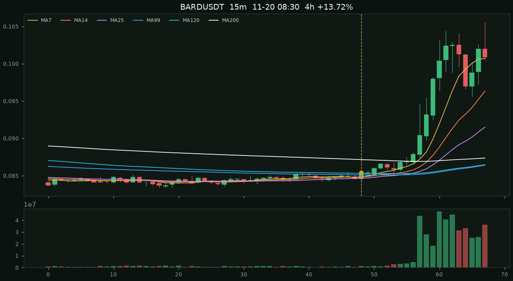
1 小時圖 · 黃虛線是上面那根 15 分所在的小時 K
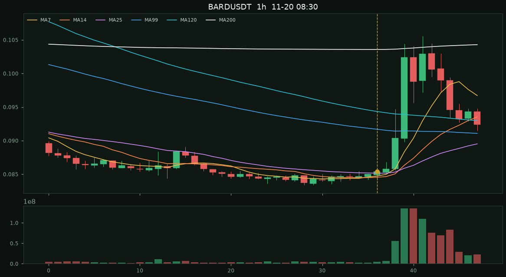
MA200下方 · 前24h -2.8% · 上影 7% · 寬度 0.814% · 量比 1.54× · 15m / 1h / 4h / 8h：+0.12% / +0.94% / +13.72% / +11.61% · 實體穿越
UNITREE 11-23 09:30 · 4h +12.12%
15 分圖 · 黃虛線是同時站上 7/14/25/99/120 的那根（圖上 MA200 只是對照）

1 小時圖 · 黃虛線是上面那根 15 分所在的小時 K

MA200上方 · 前24h -2.1% · 上影 13% · 寬度 0.545% · 量比 13.63× · 15m / 1h / 4h / 8h：+1.04% / +0.62% / +12.12% / +15.54% · 實體穿越
AVAAI 11-22 15:30 · 4h +7.78%
15 分圖 · 黃虛線是同時站上 7/14/25/99/120 的那根（圖上 MA200 只是對照）
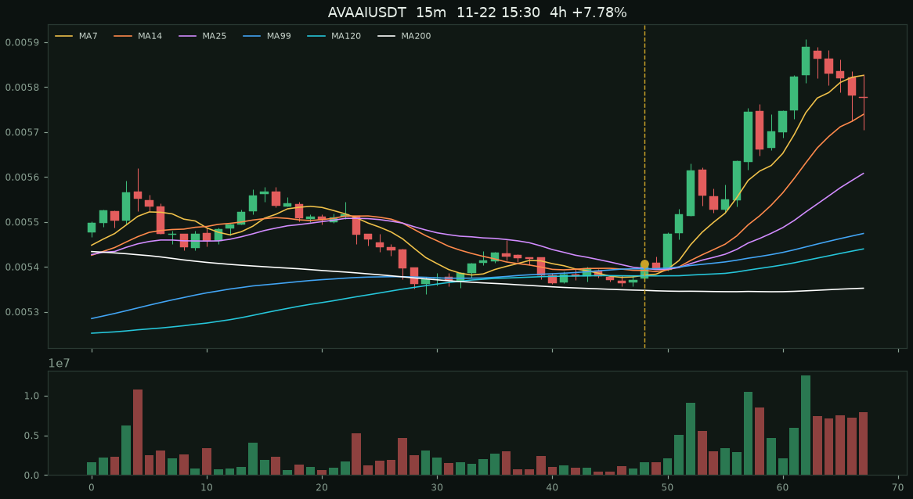
1 小時圖 · 黃虛線是上面那根 15 分所在的小時 K
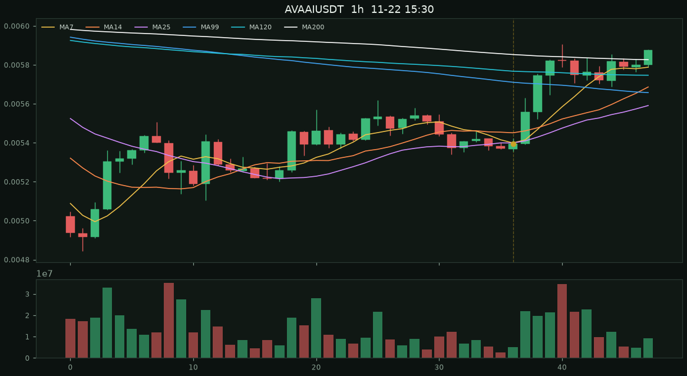
MA200上方 · 前24h +0.8% · 上影 0% · 寬度 0.400% · 量比 1.06× · 15m / 1h / 4h / 8h：-0.24% / +3.81% / +7.78% / +6.75% · 實體穿越
EVAA 11-18 20:00 · 4h +6.84%
15 分圖 · 黃虛線是同時站上 7/14/25/99/120 的那根（圖上 MA200 只是對照）
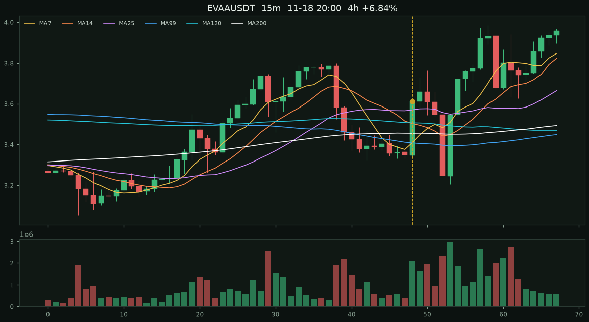
1 小時圖 · 黃虛線是上面那根 15 分所在的小時 K
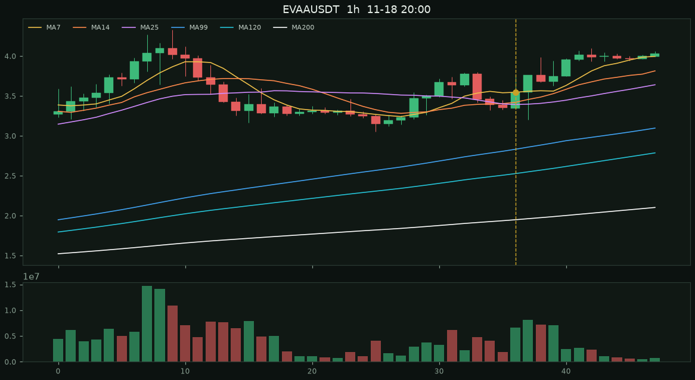
MA200上方 · 前24h -10.3% · 上影 3% · 寬度 5.621% · 量比 2.04× · 15m / 1h / 4h / 8h：+1.35% / -10.07% / +6.84% / +11.16% · 實體穿越
CRWD 11-18 22:45 · 4h +6.33%
15 分圖 · 黃虛線是同時站上 7/14/25/99/120 的那根（圖上 MA200 只是對照）

1 小時圖 · 黃虛線是上面那根 15 分所在的小時 K

MA200上方 · 前24h -0.7% · 上影 0% · 寬度 0.769% · 量比 5.53× · 15m / 1h / 4h / 8h：+2.19% / +3.22% / +6.33% / +9.46% · 實體穿越
FARTCOIN 11-23 11:00 · 4h +5.92%
15 分圖 · 黃虛線是同時站上 7/14/25/99/120 的那根（圖上 MA200 只是對照）
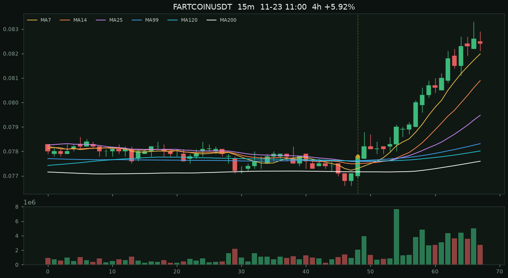
1 小時圖 · 黃虛線是上面那根 15 分所在的小時 K

MA200上方 · 前24h +0.3% · 上影 10% · 寬度 0.494% · 量比 1.93× · 15m / 1h / 4h / 8h：+0.64% / +0.51% / +5.92% / +5.53% · 實體穿越
ZHONGJI 11-19 11:15 · 4h +5.43%
15 分圖 · 黃虛線是同時站上 7/14/25/99/120 的那根（圖上 MA200 只是對照）

1 小時圖 · 黃虛線是上面那根 15 分所在的小時 K

MA200上方 · 前24h -1.9% · 上影 10% · 寬度 0.776% · 量比 0.77× · 15m / 1h / 4h / 8h：+0.24% / +0.90% / +5.43% / +4.65% · 實體穿越
COHR 11-17 15:45 · 4h +5.12%
15 分圖 · 黃虛線是同時站上 7/14/25/99/120 的那根（圖上 MA200 只是對照）

1 小時圖 · 黃虛線是上面那根 15 分所在的小時 K
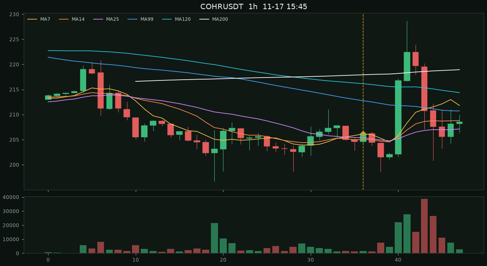
MA200下方 · 前24h -1.7% · 上影 8% · 寬度 0.779% · 量比 1.17× · 15m / 1h / 4h / 8h：-0.47% / -0.90% / +5.12% / +0.63% · 實體穿越
PROM 11-23 00:45 · 4h -7.41%
15 分圖 · 黃虛線是同時站上 7/14/25/99/120 的那根（圖上 MA200 只是對照）
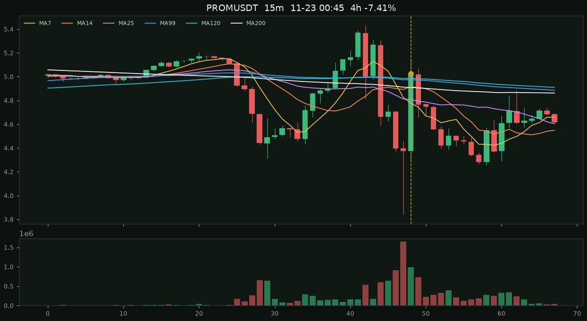
1 小時圖 · 黃虛線是上面那根 15 分所在的小時 K
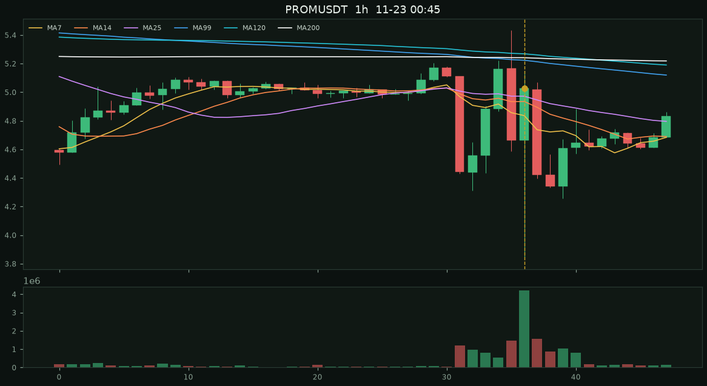
MA200上方 · 前24h -13.9% · 上影 14% · 寬度 3.580% · 量比 2.49× · 15m / 1h / 4h / 8h：-5.06% / -11.93% / -7.41% / -7.49% · 實體穿越
CBRS 11-19 22:30 · 4h -8.18%
15 分圖 · 黃虛線是同時站上 7/14/25/99/120 的那根（圖上 MA200 只是對照）

1 小時圖 · 黃虛線是上面那根 15 分所在的小時 K
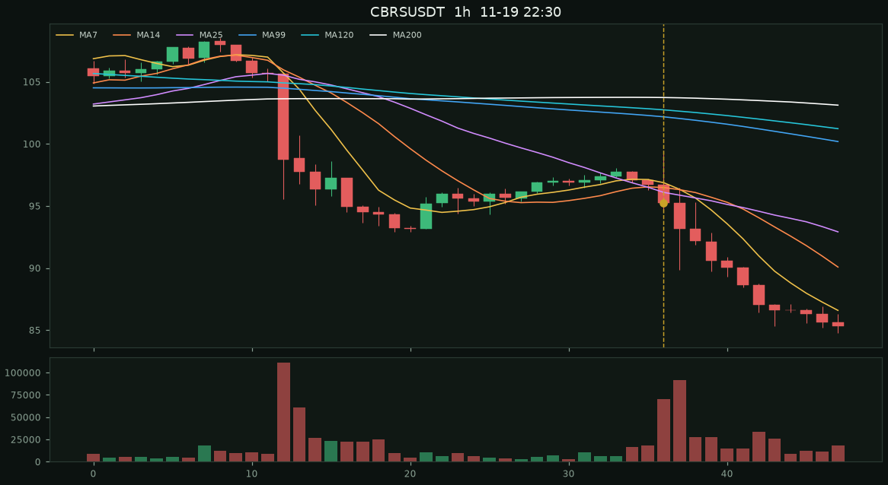
MA200下方 · 前24h -9.2% · 上影 28% · 寬度 1.930% · 量比 6.88× · 15m / 1h / 4h / 8h：-3.01% / -6.97% / -8.18% / -11.52% · 實體穿越
AIN 11-17 22:45 · 4h -8.30%
15 分圖 · 黃虛線是同時站上 7/14/25/99/120 的那根（圖上 MA200 只是對照）
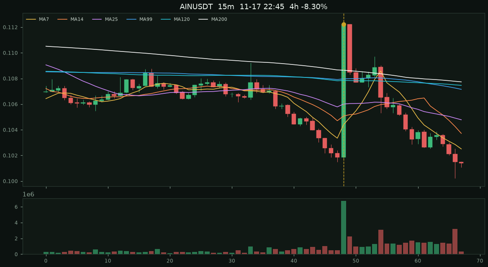
1 小時圖 · 黃虛線是上面那根 15 分所在的小時 K
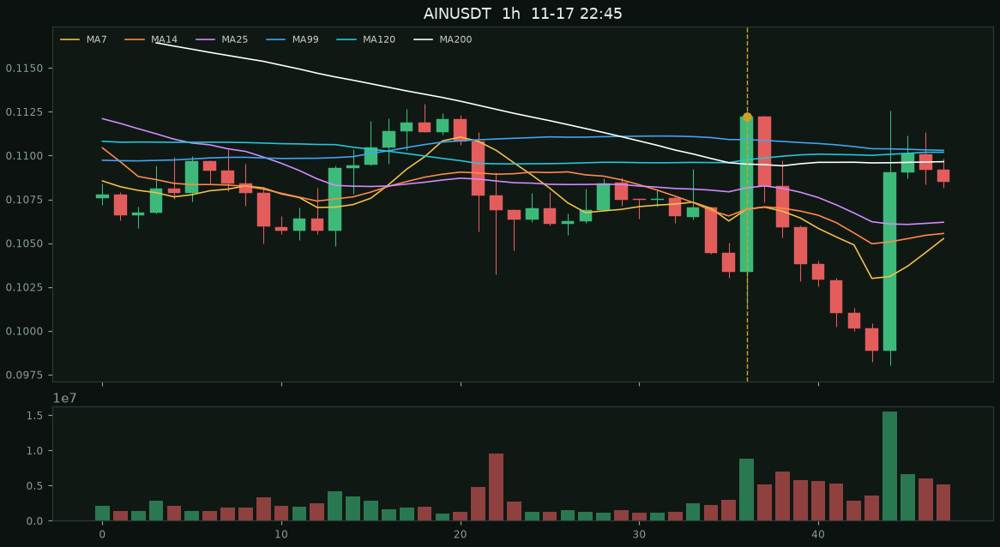
MA200上方 · 前24h -5.3% · 上影 3% · 寬度 4.424% · 量比 7.64× · 15m / 1h / 4h / 8h：-3.34% / -3.52% / -8.30% / -2.85% · 實體穿越
CYBER 11-21 08:45 · 4h -8.54%
15 分圖 · 黃虛線是同時站上 7/14/25/99/120 的那根（圖上 MA200 只是對照）
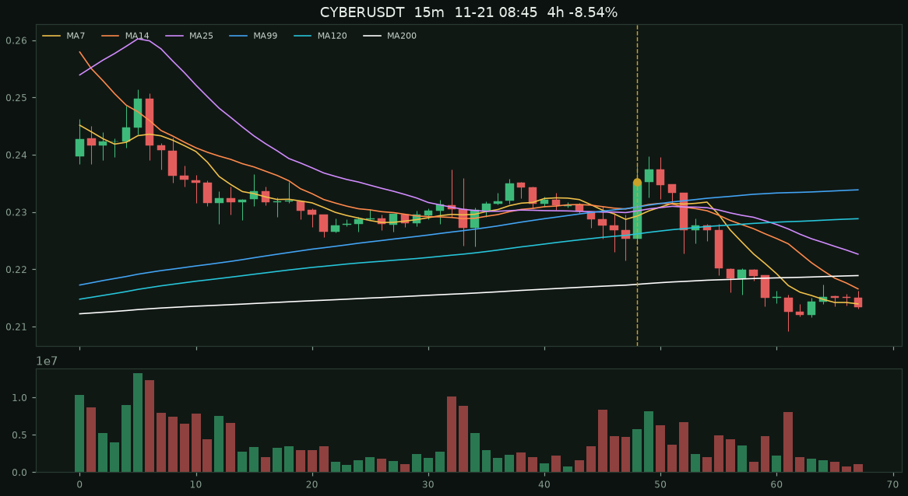
1 小時圖 · 黃虛線是上面那根 15 分所在的小時 K
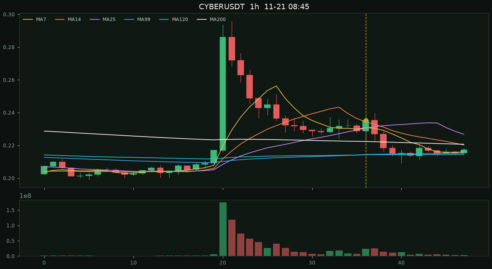
MA200上方 · 前24h +9.3% · 上影 21% · 寬度 2.059% · 量比 1.51× · 15m / 1h / 4h / 8h：+0.93% / -3.61% / -8.54% / -8.67% · 實體穿越
AAVE 11-23 18:15 · 4h —
15 分圖 · 黃虛線是同時站上 7/14/25/99/120 的那根（圖上 MA200 只是對照）
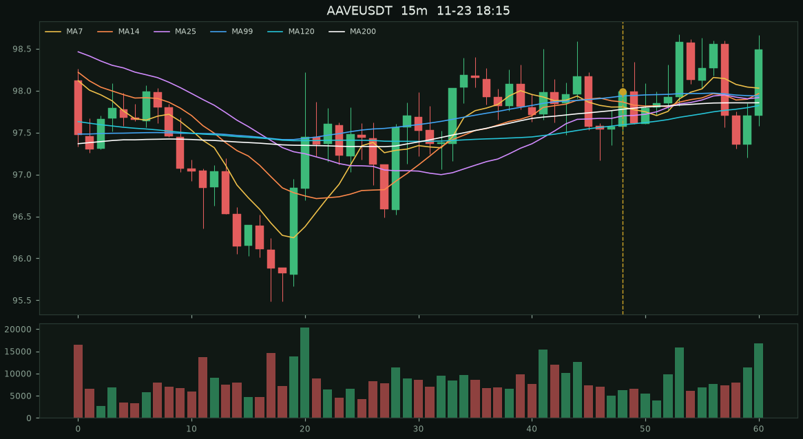
1 小時圖 · 黃虛線是上面那根 15 分所在的小時 K
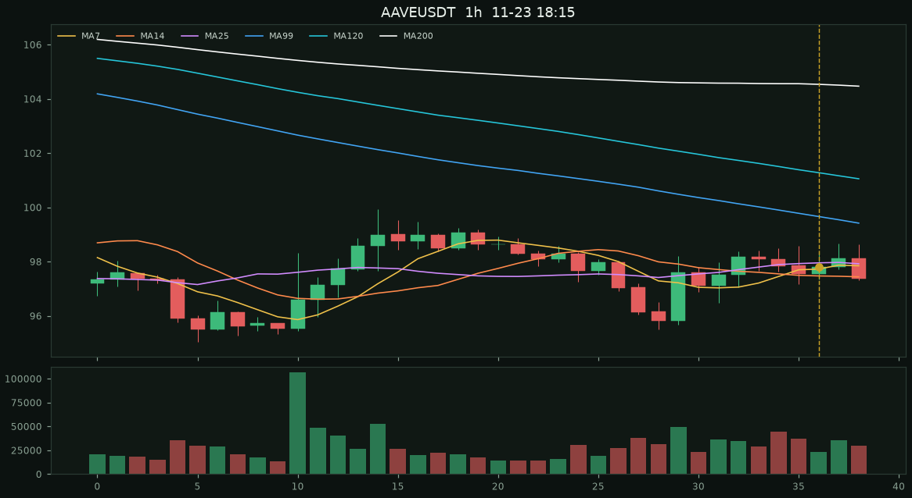
MA200上方 · 前24h +0.5% · 上影 7% · 寬度 0.352% · 量比 0.73× · 15m / 1h / 4h / 8h：-0.39% / -0.07% / — / — · 實體穿越
JCT 11-23 18:15 · 4h —
15 分圖 · 黃虛線是同時站上 7/14/25/99/120 的那根（圖上 MA200 只是對照）
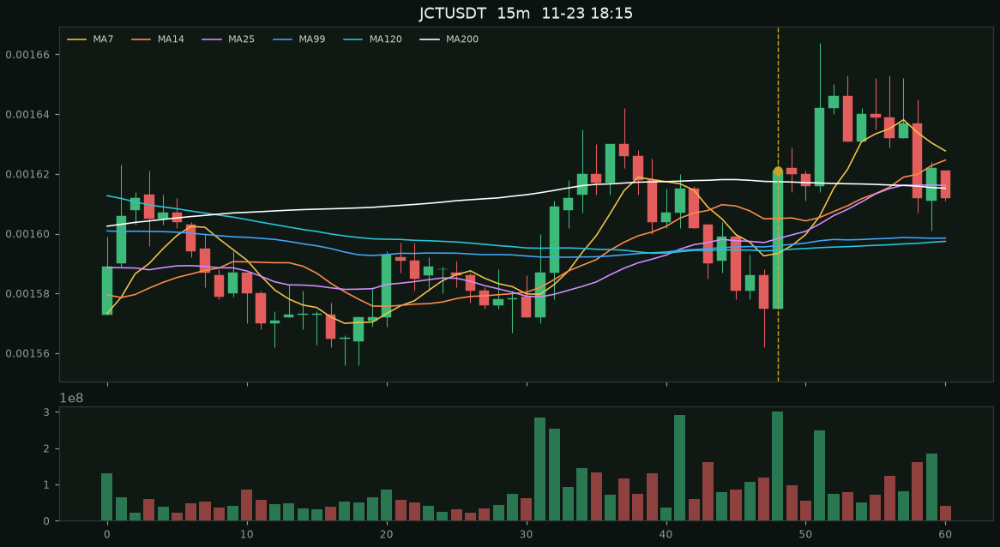
1 小時圖 · 黃虛線是上面那根 15 分所在的小時 K
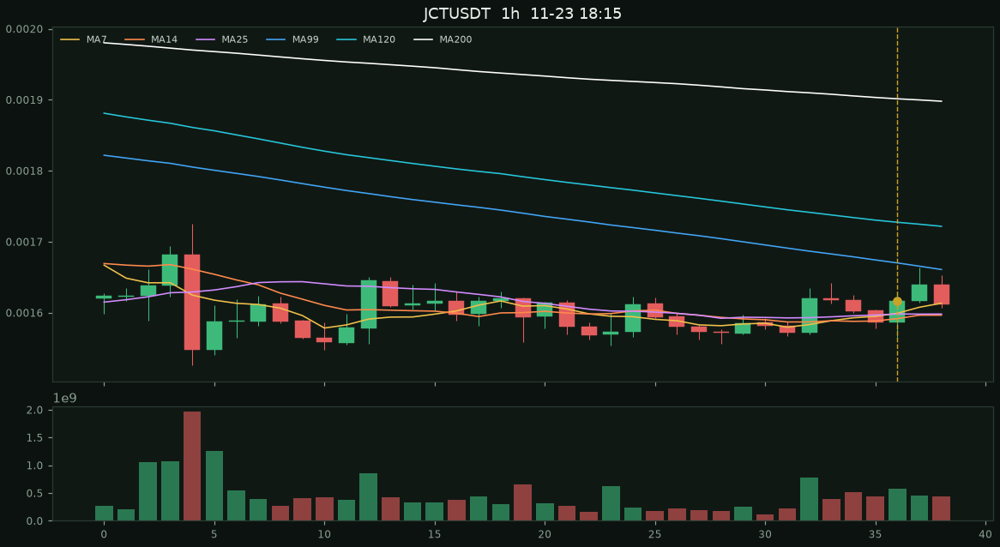
MA200上方 · 前24h +0.3% · 上影 4% · 寬度 0.780% · 量比 2.24× · 15m / 1h / 4h / 8h：-0.12% / +1.48% / — / — · 實體穿越
ZEC 11-23 21:00 · 4h —
15 分圖 · 黃虛線是同時站上 7/14/25/99/120 的那根（圖上 MA200 只是對照）
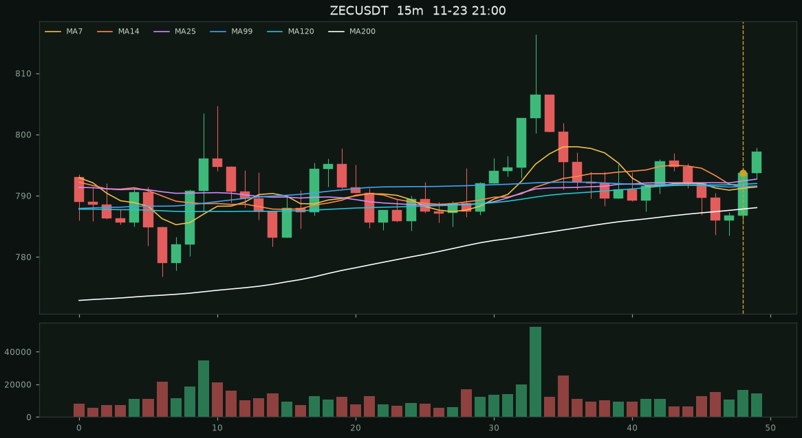
1 小時圖 · 黃虛線是上面那根 15 分所在的小時 K
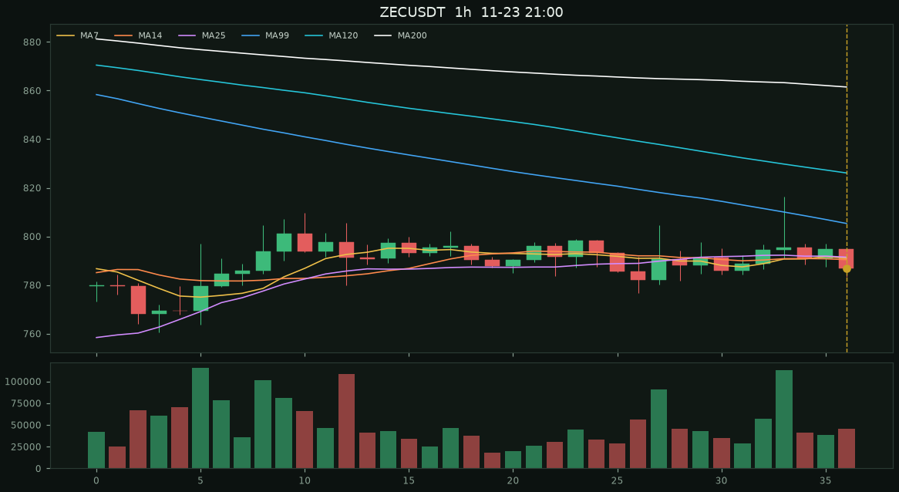
MA200上方 · 前24h -0.6% · 上影 9% · 寬度 0.150% · 量比 1.12× · 15m / 1h / 4h / 8h：+0.43% / — / — / — · 實體穿越
IREN 11-23 21:00 · 4h —
15 分圖 · 黃虛線是同時站上 7/14/25/99/120 的那根（圖上 MA200 只是對照）
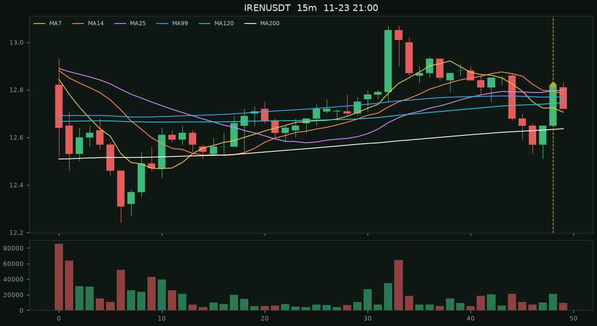
1 小時圖 · 黃虛線是上面那根 15 分所在的小時 K

MA200上方 · 前24h -0.9% · 上影 6% · 寬度 0.589% · 量比 1.28× · 15m / 1h / 4h / 8h：-0.70% / — / — / — · 實體穿越
SOXL 11-22 16:00 · 4h +4.72%
15 分圖 · 黃虛線是同時站上 7/14/25/99/120 的那根（圖上 MA200 只是對照）

1 小時圖 · 黃虛線是上面那根 15 分所在的小時 K
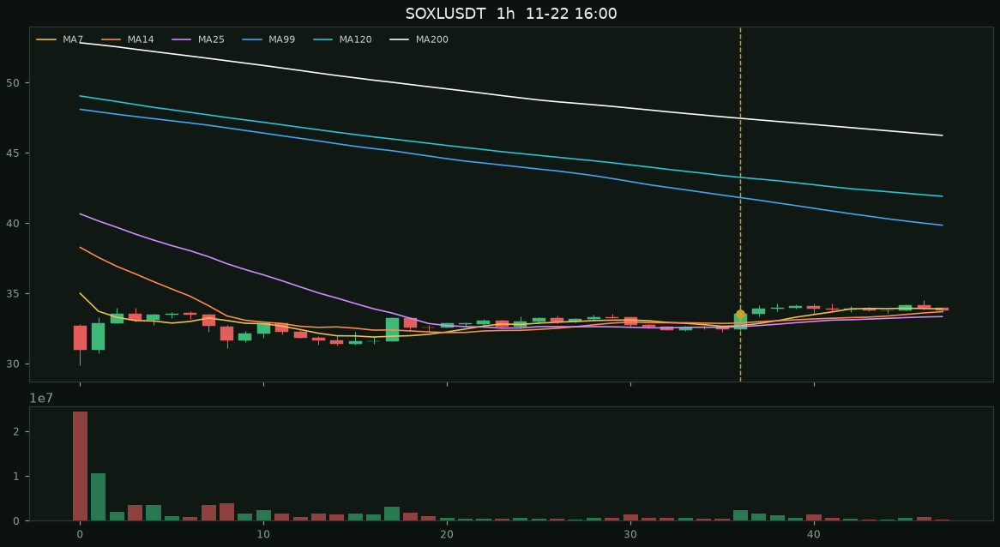
MA200下方 · 前24h +0.5% · 上影 13% · 寬度 0.362% · 量比 1.19× · 15m / 1h / 4h / 8h：+1.13% / +2.45% / +4.72% / +3.34% · 實體穿越
小米 HK1810 11-17 09:15 · 4h +4.11%
15 分圖 · 黃虛線是同時站上 7/14/25/99/120 的那根（圖上 MA200 只是對照）
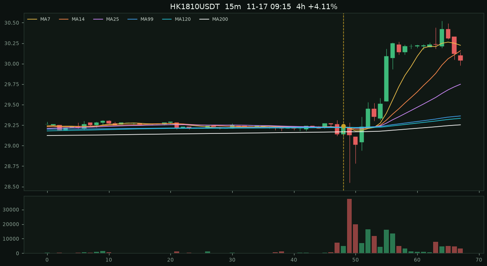
1 小時圖 · 黃虛線是上面那根 15 分所在的小時 K

MA200上方 · 前24h -0.0% · 上影 7% · 寬度 0.018% · 量比 5.66× · 15m / 1h / 4h / 8h：-0.31% / +0.79% / +4.11% / +2.12% · 實體穿越
FIL 11-22 16:00 · 4h +3.92%
15 分圖 · 黃虛線是同時站上 7/14/25/99/120 的那根（圖上 MA200 只是對照）
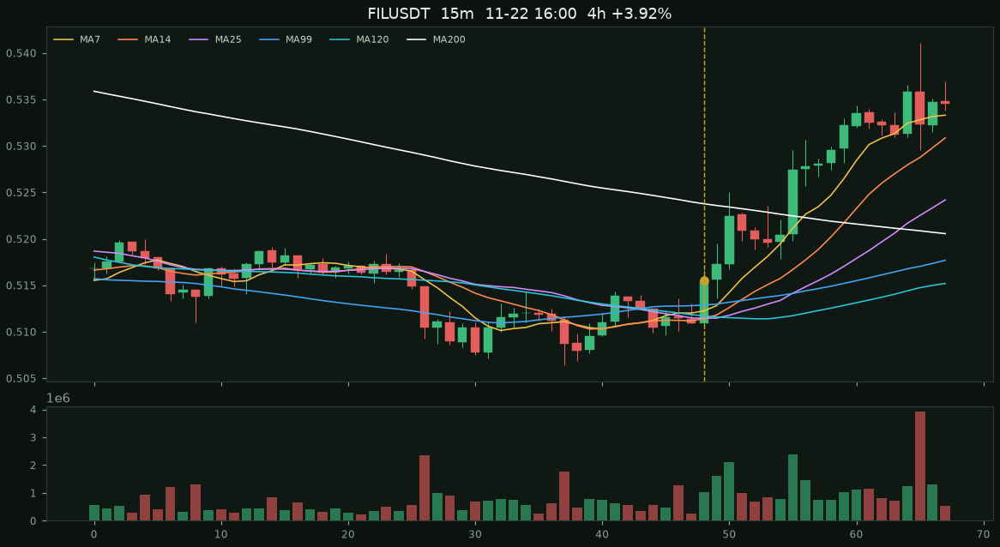
1 小時圖 · 黃虛線是上面那根 15 分所在的小時 K
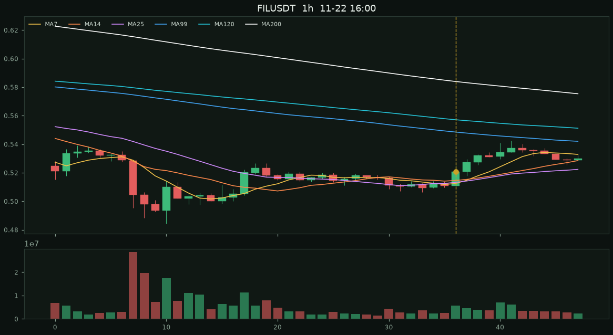
MA200下方 · 前24h +1.8% · 上影 18% · 寬度 0.321% · 量比 1.51× · 15m / 1h / 4h / 8h：+0.33% / +0.85% / +3.92% / +3.84% · 實體穿越
小米 HK1810 11-17 07:45 · 4h +3.32%
15 分圖 · 黃虛線是同時站上 7/14/25/99/120 的那根（圖上 MA200 只是對照）

1 小時圖 · 黃虛線是上面那根 15 分所在的小時 K
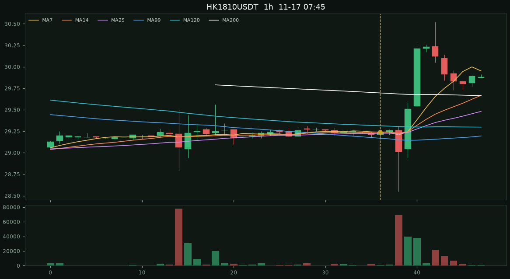
MA200上方 · 前24h -0.2% · 上影 0% · 寬度 0.053% · 量比 1.53× · 15m / 1h / 4h / 8h：-0.03% / +0.07% / +3.32% / +2.02% · 實體穿越
RIVER 11-23 11:00 · 4h +3.21%
15 分圖 · 黃虛線是同時站上 7/14/25/99/120 的那根（圖上 MA200 只是對照）
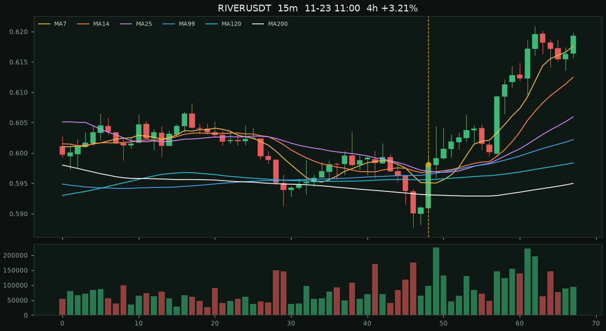
1 小時圖 · 黃虛線是上面那根 15 分所在的小時 K
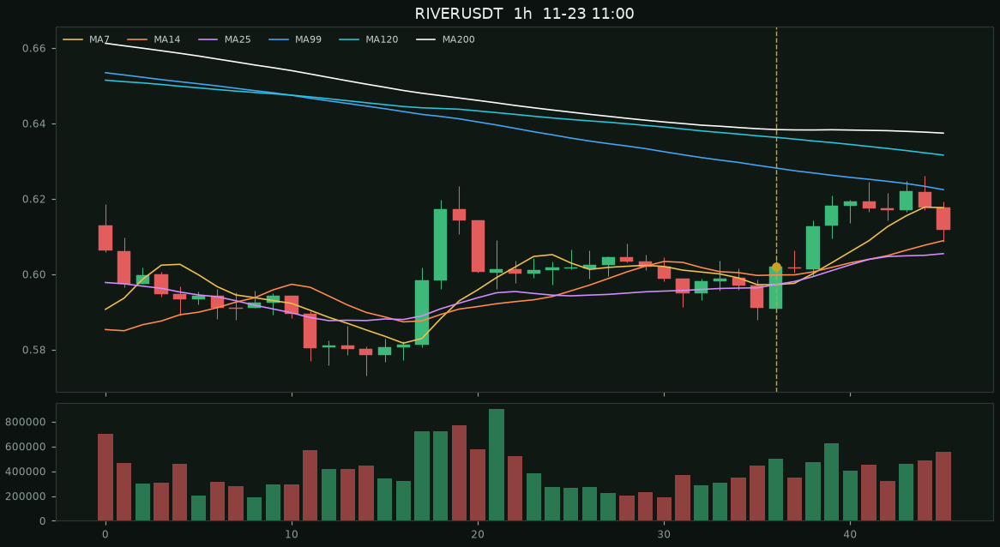
MA200上方 · 前24h +1.8% · 上影 17% · 寬度 0.342% · 量比 1.15× · 15m / 1h / 4h / 8h：+0.18% / +0.77% / +3.21% / +4.26% · 實體穿越
小米 HK1810 11-17 10:00 · 4h +2.84%
15 分圖 · 黃虛線是同時站上 7/14/25/99/120 的那根（圖上 MA200 只是對照）

1 小時圖 · 黃虛線是上面那根 15 分所在的小時 K

MA200上方 · 前24h -0.2% · 上影 29% · 寬度 0.142% · 量比 1.73× · 15m / 1h / 4h / 8h：+0.82% / +3.01% / +2.84% / +2.29% · 實體穿越
UNI 11-17 09:30 · 4h +2.21%
15 分圖 · 黃虛線是同時站上 7/14/25/99/120 的那根（圖上 MA200 只是對照）
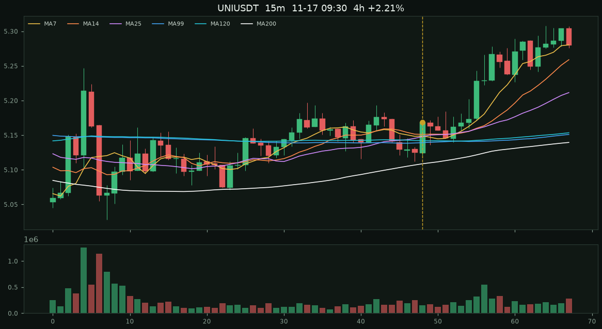
1 小時圖 · 黃虛線是上面那根 15 分所在的小時 K

MA200上方 · 前24h +0.1% · 上影 4% · 寬度 0.247% · 量比 0.95× · 15m / 1h / 4h / 8h：-0.10% / -0.12% / +2.21% / +1.37% · 實體穿越
過濾對照
| 條件 | 筆數 | 幣數 | 下一根假突破 | 15m勝率 | 15m均 | 30m勝率 | 30m均 | 1h勝率 | 1h均 | 2h勝率 | 2h均 | 4h勝率 | 4h均 | 8h勝率 | 8h均 |
|---|---|---|---|---|---|---|---|---|---|---|---|---|---|---|---|
| 原始：一根K從帶下收到帶上 | 267 | 148 | 30.7% | 47.9% | -0.034% | 50.2% | +0.028% | 47.9% | -0.053% | 50.9% | +0.056% | 47.5% | -0.037% | 46.4% | -0.145% |
| 實體穿越（開在帶下、收在帶上） | 256 | 145 | 30.5% | 48.0% | -0.035% | 50.4% | +0.026% | 48.4% | -0.069% | 50.0% | +0.034% | 46.8% | -0.056% | 45.2% | -0.171% |
| 帶子寬度 ≤ 1.0% | 219 | 126 | 27.4% | 50.7% | +0.056% | 53.9% | +0.192% | 51.2% | +0.124% | 55.8% | +0.285% | 53.5% | +0.317% | 50.2% | +0.278% |
| 帶子寬度 ≤ 0.4% | 99 | 66 | 28.3% | 47.5% | +0.021% | 55.1% | +0.089% | 49.0% | +0.122% | 52.0% | +0.243% | 48.5% | +0.141% | 51.5% | +0.138% |
| 帶子寬度 > 1.0% | 48 | 40 | 45.8% | 35.4% | -0.445% | 33.3% | -0.714% | 33.3% | -0.858% | 29.2% | -0.977% | 20.8% | -1.624% | 29.2% | -2.021% |
| 放量 ≥ 1.5× | 123 | 89 | 27.6% | 48.0% | -0.132% | 47.2% | -0.152% | 49.6% | -0.205% | 52.8% | -0.056% | 46.7% | -0.239% | 43.4% | -0.173% |
| 實體 + 寬度≤1% + 放量≥1.5× | 87 | 66 | 25.3% | 50.6% | +0.060% | 50.6% | +0.115% | 52.9% | +0.077% | 59.8% | +0.275% | 55.8% | +0.379% | 47.7% | +0.580% |
| 站上 MA200 | 197 | 118 | 28.9% | 43.7% | -0.080% | 49.2% | -0.083% | 42.1% | -0.229% | 46.7% | -0.170% | 45.6% | -0.116% | 47.6% | -0.163% |
| 優化：站上MA200 + 前24h漲 + 8h冷卻 | 51 | 47 | 33.3% | 49.0% | +0.008% | 47.1% | -0.085% | 47.1% | -0.105% | 45.1% | -0.265% | 42.9% | -0.160% | 34.7% | -0.558% |
| 優化(推薦)：同上 + 寬度≤1% + 上影≤25% | 31 | 28 | 25.8% | 61.3% | +0.127% | 64.5% | +0.301% | 61.3% | +0.255% | 67.7% | +0.553% | 62.1% | +0.783% | 44.8% | +0.386% |
寬度 =（最高均線 / 最低均線 − 1）× 100%，用突破前一根的均線。假突破 = 進場那根 15 分收盤又跌回最高均線下方。
訊號表（依 4h 報酬排序，最多 80 筆）
| 時間 | 標的 | 進場 | 寬度 | 量比 | MA200 | 前24h | 上影 | 15m | 1h | 4h | 8h |
|---|---|---|---|---|---|---|---|---|---|---|---|
| 11-20 08:30 | BARD | 0.0853 | 0.81% | 1.54× | 下方 | -2.8% | 7% | +0.12% | +0.94% | +13.72% | +11.61% |
| 11-23 09:30 | UNITREE | 93.49 | 0.55% | 13.63× | 上方 | -2.1% | 13% | +1.04% | +0.62% | +12.12% | +15.54% |
| 11-22 15:30 | AVAAI | 0.005409 | 0.40% | 1.06× | 上方 | +0.8% | 0% | -0.24% | +3.81% | +7.78% | +6.75% |
| 11-18 20:00 | EVAA | 3.6106 | 5.62% | 2.04× | 上方 | -10.3% | 3% | +1.35% | -10.07% | +6.84% | +11.16% |
| 11-18 22:45 | CRWD | 225.95 | 0.77% | 5.53× | 上方 | -0.7% | 0% | +2.19% | +3.22% | +6.33% | +9.46% |
| 11-23 11:00 | FARTCOIN | 0.0777 | 0.49% | 1.93× | 上方 | +0.3% | 10% | +0.64% | +0.51% | +5.92% | +5.53% |
| 11-19 11:15 | ZHONGJI | 65.53 | 0.78% | 0.77× | 上方 | -1.9% | 10% | +0.24% | +0.90% | +5.43% | +4.65% |
| 11-17 15:45 | COHR | 206.25 | 0.78% | 1.17× | 下方 | -1.7% | 8% | -0.47% | -0.90% | +5.12% | +0.63% |
| 11-22 16:00 | SOXL | 32.64 | 0.36% | 1.19× | 下方 | +0.5% | 13% | +1.13% | +2.45% | +4.72% | +3.34% |
| 11-20 20:15 | SOPH | 0.001016 | 0.81% | 0.75× | 上方 | -1.5% | 7% | +0.49% | +0.89% | +4.33% | +1.18% |
| 11-17 09:15 | 小米 HK1810 | 29.22 | 0.02% | 5.66× | 上方 | -0.0% | 7% | -0.31% | +0.79% | +4.11% | +2.12% |
| 11-22 16:00 | WLD | 0.226 | 0.64% | 1.44× | 下方 | +3.8% | 27% | +0.53% | +0.97% | +3.94% | +3.89% |
| 11-22 16:00 | FIL | 0.5156 | 0.32% | 1.51× | 下方 | +1.8% | 18% | +0.33% | +0.85% | +3.92% | +3.84% |
| 11-18 13:15 | SAPIEN | 0.03715 | 0.66% | 1.47× | 上方 | -0.6% | 21% | +0.30% | +2.13% | +3.80% | +3.53% |
| 11-17 19:00 | SKY | 0.05141 | 0.60% | 2.49× | 下方 | -1.2% | 10% | +0.68% | +1.54% | +3.75% | +4.90% |
| 11-19 05:00 | AIN | 0.1071 | 5.84% | 6.36× | 上方 | +0.4% | 5% | +3.84% | +2.44% | +3.57% | +2.53% |
| 11-23 11:00 | ENA | 0.1007 | 0.89% | 1.62× | 上方 | +2.0% | 13% | +0.74% | +0.90% | +3.46% | +2.35% |
| 11-18 05:15 | JUP | 0.253 | 0.72% | 1.70× | 下方 | +1.5% | 10% | +0.40% | +1.86% | +3.36% | +3.87% |
| 11-17 07:45 | 小米 HK1810 | 29.24 | 0.05% | 1.53× | 上方 | -0.2% | 0% | -0.03% | +0.07% | +3.32% | +2.02% |
| 11-17 08:30 | 小米 HK1810 | 29.27 | 0.03% | 1.24× | 上方 | +0.0% | 0% | -0.03% | -0.48% | +3.25% | +1.71% |
| 11-23 11:00 | RIVER | 0.598 | 0.34% | 1.15× | 上方 | +1.8% | 17% | +0.18% | +0.77% | +3.21% | +4.26% |
| 11-23 11:00 | WIF | 0.1201 | 0.89% | 1.50× | 上方 | +2.0% | 0% | +0.83% | +0.67% | +3.08% | +2.75% |
| 11-17 00:15 | XPL | 0.0437 | 0.95% | 3.09× | 下方 | -2.1% | 18% | -0.64% | +0.69% | +2.97% | +3.96% |
| 11-19 14:45 | JCT | 0.002021 | 0.91% | 3.52× | 下方 | -2.7% | 3% | +0.25% | +0.40% | +2.87% | -1.04% |
| 11-17 10:00 | 小米 HK1810 | 29.21 | 0.14% | 1.73× | 上方 | -0.2% | 29% | +0.82% | +3.01% | +2.84% | +2.29% |
| 11-17 00:15 | YB | 0.04255 | 0.81% | 0.94× | 上方 | -0.7% | 6% | -0.19% | +1.01% | +2.70% | +0.89% |
| 11-18 11:00 | BERA | 0.0869 | 0.61% | 1.38× | 下方 | -1.9% | 11% | -0.12% | +0.58% | +2.53% | +1.27% |
| 11-20 05:30 | AKE | 0.010281 | 0.44% | 0.55× | 上方 | -0.8% | 21% | +0.40% | +2.93% | +2.49% | +2.39% |
| 11-17 01:45 | EVAA | 3.3169 | 10.68% | 2.69× | 上方 | +9.7% | 6% | +2.65% | +5.71% | +2.39% | +3.60% |
| 11-17 09:30 | UNI | 5.168 | 0.25% | 0.95× | 上方 | +0.1% | 4% | -0.10% | -0.12% | +2.21% | +1.37% |
| 11-20 11:15 | ZEST | 0.1108 | 0.42% | 1.20× | 下方 | -1.4% | 37% | -0.45% | -0.79% | +2.19% | +4.82% |
| 11-23 07:30 | ORCA | 1.189 | 0.24% | 0.71× | 上方 | -1.3% | 22% | +0.17% | +0.67% | +2.19% | +0.17% |
| 11-18 22:45 | AVGO | 349.56 | 1.70% | 3.56× | 上方 | +1.3% | 7% | +0.55% | +1.66% | +2.15% | +1.02% |
| 11-23 11:00 | ZRO | 1.1778 | 0.78% | 0.97× | 上方 | -1.0% | 6% | +0.33% | -0.57% | +2.11% | +4.13% |
| 11-19 11:15 | XPL | 0.04636 | 0.49% | 0.68× | 上方 | -0.2% | 2% | +0.41% | +0.97% | +2.09% | +3.26% |
| 11-23 11:00 | LDO | 0.2365 | 0.70% | 1.47× | 上方 | +1.5% | 12% | +0.72% | +0.25% | +1.95% | +2.49% |
| 11-17 07:45 | BAT | 0.09451 | 0.37% | 1.92× | 上方 | -2.4% | 32% | -0.14% | +0.36% | +1.93% | +5.87% |
| 11-16 21:45 | ZRO | 1.4091 | 1.32% | 0.85× | 下方 | -1.2% | 1% | +1.42% | +1.72% | +1.90% | +3.37% |
| 11-23 13:15 | OPENAI | 1167.57 | 0.36% | 0.33× | 上方 | +0.3% | 11% | +0.34% | +0.22% | +1.81% | +1.23% |
| 11-19 11:15 | STX | 0.2735 | 0.86% | 0.44× | 上方 | -2.0% | 2% | +0.69% | +1.94% | +1.79% | +1.10% |
| 11-18 05:15 | IREN | 16.77 | 3.43% | 4.96× | 下方 | -3.5% | 1% | -1.91% | -0.42% | +1.79% | +0.95% |
| 11-23 08:45 | UNI | 4.694 | 0.24% | 0.63× | 上方 | -0.8% | 3% | -0.21% | -0.17% | +1.73% | +1.45% |
| 11-21 14:15 | Q | 0.02419 | 0.84% | 3.09× | 下方 | -4.1% | 1% | +2.52% | +3.89% | +1.65% | +3.31% |
| 11-17 15:45 | STXX | 505.14 | 0.45% | 1.24× | 下方 | -1.4% | 7% | -0.28% | -0.49% | +1.59% | -1.85% |
| 11-23 11:00 | ARB | 0.11458 | 0.58% | 1.05× | 上方 | +1.4% | 7% | +0.93% | +0.38% | +1.57% | -0.30% |
| 11-18 22:45 | AMD | 515.23 | 0.98% | 5.27× | 上方 | -0.7% | 11% | -0.06% | -0.59% | +1.53% | +1.79% |
| 11-23 13:15 | ZEC | 794.37 | 0.34% | 0.97× | 上方 | +2.3% | 12% | +0.09% | -1.10% | +1.52% | +0.35% |
| 11-23 11:00 | SAND | 0.03348 | 0.58% | 1.32× | 上方 | +1.4% | 7% | +0.51% | +0.42% | +1.52% | +0.57% |
| 11-17 07:45 | TRUMP | 0.946 | 0.78% | 1.91× | 上方 | -2.1% | 0% | -0.11% | -0.42% | +1.48% | +2.01% |
| 11-20 02:15 | KERNEL | 0.03931 | 0.43% | 0.59× | 上方 | -0.5% | 0% | -0.33% | +0.79% | +1.48% | +1.22% |
| 11-17 09:00 | MEGA | 0.04963 | 0.42% | 2.05× | 上方 | +0.5% | 50% | +0.30% | +1.13% | +1.41% | -0.14% |
| 11-19 08:15 | AIGENSYN | 0.01304 | 0.73% | 2.01× | 上方 | +1.1% | 0% | +0.23% | -0.61% | +1.38% | +1.38% |
| 11-23 04:00 | ANT | 90.07 | 0.12% | 0.50× | 上方 | +0.0% | 8% | +0.00% | +0.13% | +1.35% | -0.47% |
| 11-19 13:15 | COHR | 217.48 | 0.51% | 0.30× | 上方 | -0.9% | 14% | +0.07% | +0.66% | +1.33% | +5.48% |
| 11-23 07:15 | CRWD | 221.47 | 0.30% | 7.03× | 上方 | -0.2% | 15% | -0.38% | -0.27% | +1.33% | +1.20% |
| 11-17 15:30 | TA | 0.11206 | 2.88% | 8.51× | 上方 | -6.6% | 3% | -2.46% | -8.24% | +1.29% | -7.02% |
| 11-23 11:00 | ATOM | 1.171 | 0.56% | 1.09× | 下方 | +0.3% | 23% | +0.77% | +0.77% | +1.28% | +1.71% |
| 11-17 00:15 | CRV | 0.2031 | 0.52% | 1.20× | 下方 | +0.7% | 24% | -0.49% | +0.49% | +1.23% | +1.13% |
| 11-19 20:30 | TA | 0.10746 | 0.70% | 0.57× | 上方 | -0.4% | 16% | -0.36% | -0.75% | +1.22% | +0.77% |
| 11-22 04:00 | ELSA | 0.06738 | 0.38% | 0.52× | 上方 | -8.0% | 32% | -0.06% | +0.96% | +1.22% | +4.75% |
| 11-23 11:00 | DOGE | 0.05505 | 0.61% | 1.74× | 上方 | -0.0% | 12% | +0.51% | +0.56% | +1.18% | +0.91% |
| 11-17 07:45 | DOT | 0.7327 | 0.48% | 1.36× | 上方 | -1.4% | 2% | -0.16% | -0.56% | +1.16% | +0.05% |
| 11-17 19:00 | SAND | 0.03577 | 0.59% | 0.98× | 上方 | +0.2% | 0% | +0.34% | +0.64% | +1.12% | -0.39% |
| 11-23 11:00 | UNI | 4.724 | 0.37% | 1.30× | 上方 | -0.3% | 14% | +0.66% | +0.97% | +1.10% | +0.55% |
| 11-17 19:15 | GRASS | 0.3946 | 0.42% | 1.18× | 下方 | -1.3% | 10% | +0.89% | +1.93% | +1.09% | -0.25% |
| 11-20 09:30 | BABA | 84.4 | 0.76% | 9.54× | 下方 | -1.5% | 12% | +0.08% | -0.51% | +0.95% | -0.75% |
| 11-23 11:00 | AMAT | 316.15 | 0.60% | 0.45× | 上方 | +0.3% | 12% | +0.61% | +1.02% | +0.93% | +2.24% |
| 11-17 19:00 | INX | 0.003458 | 0.88% | 1.09× | 上方 | +0.6% | 0% | +1.53% | +1.56% | +0.90% | -0.29% |
| 11-17 15:45 | AXTI | 38.99 | 1.07% | 1.57× | 下方 | -3.2% | 10% | -0.59% | -1.56% | +0.85% | -6.41% |
| 11-22 04:00 | SKY | 0.04395 | 0.38% | 1.53× | 下方 | +1.7% | 0% | +0.50% | +1.05% | +0.80% | +0.00% |
| 11-19 11:15 | MET | 0.2706 | 0.67% | 0.61× | 上方 | -0.1% | 13% | +0.85% | +1.74% | +0.78% | +1.48% |
| 11-19 20:00 | CL | 82.85 | 0.21% | 1.27× | 下方 | -1.9% | 12% | +0.16% | +0.51% | +0.75% | -0.08% |
| 11-19 15:30 | WLFI | 0.04588 | 0.12% | 0.48× | 上方 | -0.1% | 11% | +0.00% | -0.39% | +0.70% | +0.70% |
| 11-17 19:00 | LSK | 0.14439 | 0.27% | 1.55× | 上方 | -0.2% | 8% | +0.24% | +0.36% | +0.69% | -1.21% |
| 11-17 19:00 | CRV | 0.2058 | 0.60% | 0.94× | 上方 | +0.4% | 0% | +0.44% | +0.78% | +0.68% | -0.53% |
| 11-23 11:00 | SPCX | 131.18 | 0.30% | 1.44× | 上方 | +0.1% | 0% | +0.34% | +0.52% | +0.67% | +0.34% |
| 11-17 00:15 | COIN | 119.79 | 0.53% | 0.73× | 上方 | +0.4% | 28% | +0.05% | -0.12% | +0.66% | -0.51% |
| 11-17 07:45 | ONDO | 0.3073 | 0.43% | 1.62× | 上方 | -2.1% | 4% | -0.26% | -0.91% | +0.65% | +0.26% |
| 11-19 09:30 | XPL | 0.04625 | 0.66% | 0.97× | 上方 | -0.0% | 2% | -0.17% | -0.52% | +0.65% | +3.24% |
| 11-17 09:30 | ETH | 1823.94 | 0.34% | 2.17× | 上方 | +0.1% | 6% | -0.25% | -0.54% | +0.64% | -0.55% |